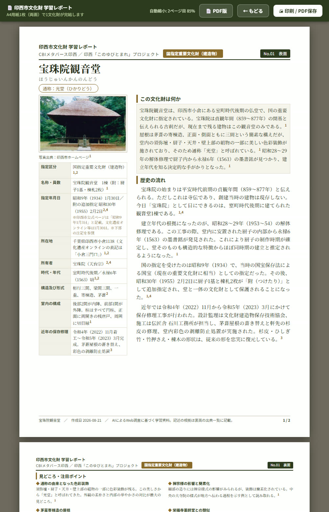
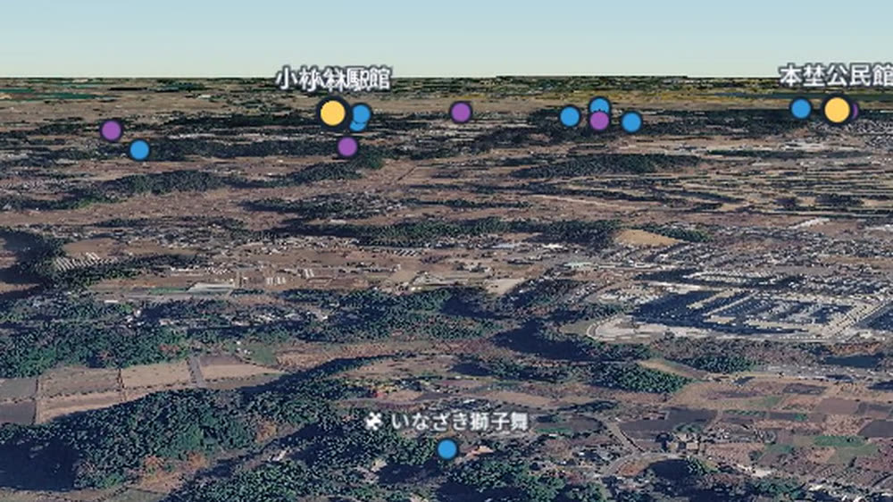
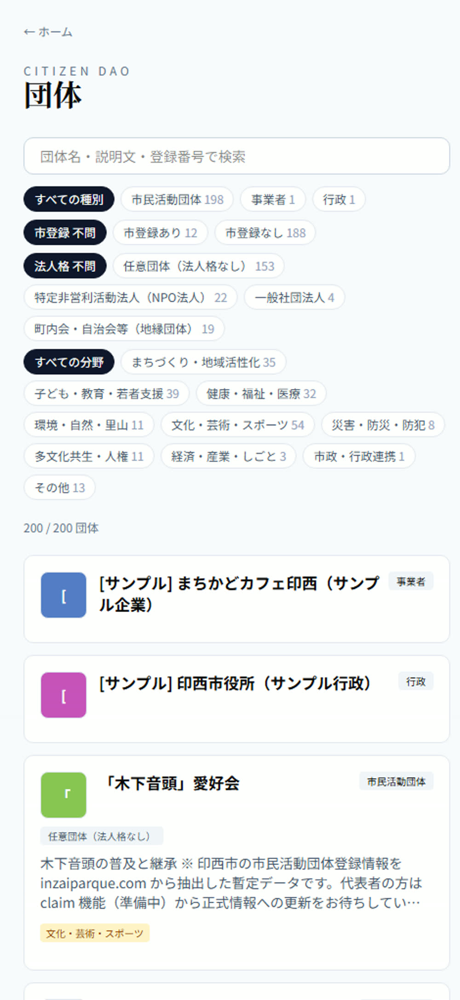
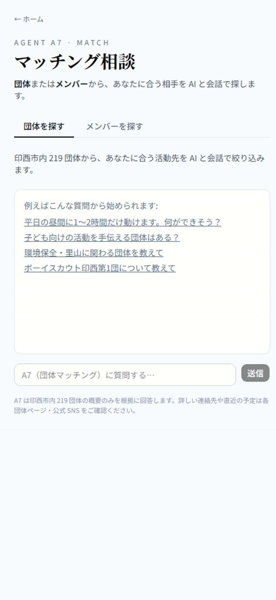
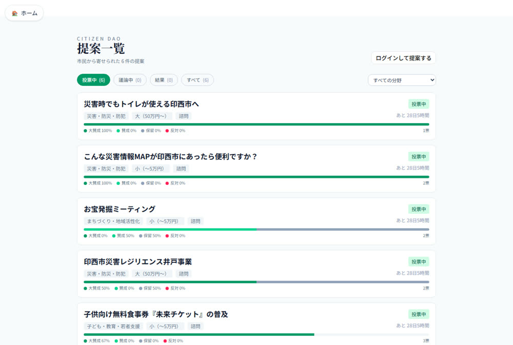

文化財、成熟した市民活動、技能を持つ市民。
印西市に足りないものは見当たらなかった
筆者自身、第2回講座で木下地区を歩くまで、市内にどんな文化財があるかを知らなかった
文化財は50件ある。
しかし市民は、その場所も名前も知らない
参加したい市民と、担い手を探す団体が、互いを知らないままでいる
声を束ね、政策の言葉に翻訳して届ける場がない
呼びかけでは変わらない。
関われる環境の設計が要る
| 増えてきたと感じる地域の問題や課題 | 団体 | 市民 |
|---|---|---|
| 孤独・孤立に関すること | 37.0% | 14.0% |
| 高齢者の暮らしに関すること | 60.5% | 47.0% |
| 移動手段の確保に関すること | 54.3% | 43.7% |
| 防犯に関すること | 27.2% | 53.0% |
行政や支援センターの支援は、来訪した市民・登録済みの団体が起点になる。
潜在的な担い手や、まだ言葉になっていない声は、この形では拾い上げられない
市長は「民に委ねる」から「民とともに創る」への転換を掲げた。
しかし一部の個人や団体に依存する状態では、持続可能性に限界が生じる
人は「面倒だ」と感じる行動を無意識に避ける。
「関心を持ってください」と呼びかけるだけでは続かない
文化財、団体、イベント、技能を持つ市民を一つの場に集める
誰が何を望んでいるかを、提案と投票の形で数値にする
生まれたアイデアに人を募り、実際に動かすところまで支える
ツールだけでは続かない。
2020年、日本の自治体として初めて本格運用した。
スマートシティ構想の策定では約300名が登録し261件のコメント、登録者の約4割を10代が占めた。
ただし担当者自身が「導入より、使いこなせる組織体制をつくることが本当の課題」と指摘している
拘束力がなければ形骸化する。
2015年に開始し、初期は約26件のテーマが審議され、その約8割が政府の行動につながった。
しかし2018年以降は実質的に機能停止。
共同創設者はこれを「歯のない虎」と表現した
行政がテーマと期間を定めて意見を募る。
行政改革の戦略についての募集ページには「アイデア（48件）」と表示されている
市民がいつでも提案を起こす。
自分たちで実行できることは、行政を待たずに動く
| 対象 | 拘束力 | 誰が決めるか | 例 |
|---|---|---|---|
| 団体の内部運営 | 拘束的 | その団体の会員 | 年会費、運営方針、役員選任 |
| 団体の主催事業 | 拘束的 | その団体の会員 | 事業の実施、名称の決定 |
| 市政に関わる事項 | 諮問的 | 参加者の誰でも | 予算・条例を要する提案 |
| 選挙に関わる事項 | 対象外 | ― | 公職選挙法により除外 |
位置情報・読み仮名・キャラクター・クイズを備え、A4レポートと三次元地図で見られる
告知ページ・PDF・チラシ画像から、AIが日時と場所を抽出して取り込む
技能・経験・関心を登録し、AIが問いを立てて候補を絞る
提案ごとに拘束力の種別を持たせ、過程がすべて記録される


団体登録も活動報告も紙ベース。
新規団体や子育て世代には負担が大きく、支援センターも管理作業に時間を取られていた
告知ページのURL、配布用PDF、チラシ画像から、AIが開催日時・場所・主催者を抽出して取り込む

市民が持つ技能・経験・関心領域を、公開範囲を本人が選べる形で一覧化する
関心の分野、使える時間、住んでいる地域を聞きながら候補を絞る。
団体が担い手を探す場合も同じ仕組みが働く

| 対象 | 従来の制約 | 実装後 |
|---|---|---|
| 文化財の解説作成 | 調査と執筆の作業量 | 公開情報を調査し、出典を明示して作成 |
| イベント情報の入力 | 手入力の手間 | チラシ画像・PDF・告知ページから自動抽出 |
| 提案の仕分け | 担当者の判断と時間 | 分野を自動分類 |
| 人と団体の引き合わせ | 仲介者の力量と稼働時間 | 対話で絞り込み |

市民が自分たちで実行できる提案は、行政の予算や許認可を待たずに動かす
予算・条例・制度設計が必要な提案は、集約データを根拠として行政へ届ける
市長タウンミーティングで、千葉ニュータウン中央駅前をはじめとする公共の場での常設マルシェを市民団体 COCoLa が提案
有志が「イルミライマルシェ」を結成し、駅前のイルミネーション点灯に合わせたマルシェを開催
公園・広場の利活用の試行を開始。
活用例にマルシェが挙げられ、公民連携推進室も新設された
すでに公開済みで、いつでも見られる。
必要なのは配布ではなく、教材として使えると伝えること
歩いて訪ねることは、資料を読むこととは違う理解をもたらす
ブログメディア「千葉ほくそうパルケ」から記事掲載の協力を得て、35件のリンクを張っている。
記録している市民は現にいる。
ただし、まだ数えるほどしかいない
CBIと市の関係課で構成し、運用状況と行政側の対応状況を共有する
議決結果や提案カテゴリーをリアルタイムに閲覧でき、市民の声を継続的に把握できる
職務記述書を整備し、担当者の異動や退職があっても連携が途絶しない構造にする
| リスク | 対策 |
|---|---|
| 参加者の属性が偏り、議決が偏る | 参加者の属性を可視化し、多様性確保の働きかけを行政と協働で実施する |
| 担当者の異動で連携が途絶える | 連携協議会を制度として明文化し、職務記述書を整備する |
| 議会・市民からの懸念 | 議決結果・参加者・資金配分をすべて公開する。重要案件は議会報告を必須とする |
関心のある分野から参加し、担い手として名乗りを上げられる
市内で活動する団体の情報を集めて公開し、参加したい市民と出会える
協賛や連携の相手を見つける。
ただし、まだ実例を示せる段階にない
整理された市民の意向を、判断の材料として受け取れる
| # | 提言 |
|---|---|
| ① | CiDAO 連携協議会の設置 |
| ② | 段階的な意思決定の委任 |
| ③ | 文化財学習コンテンツの教育現場での活用 |
| ④ | 全国モデルとしての発信 |
| ⑤ | 企画提案型協働事業としての実施 |